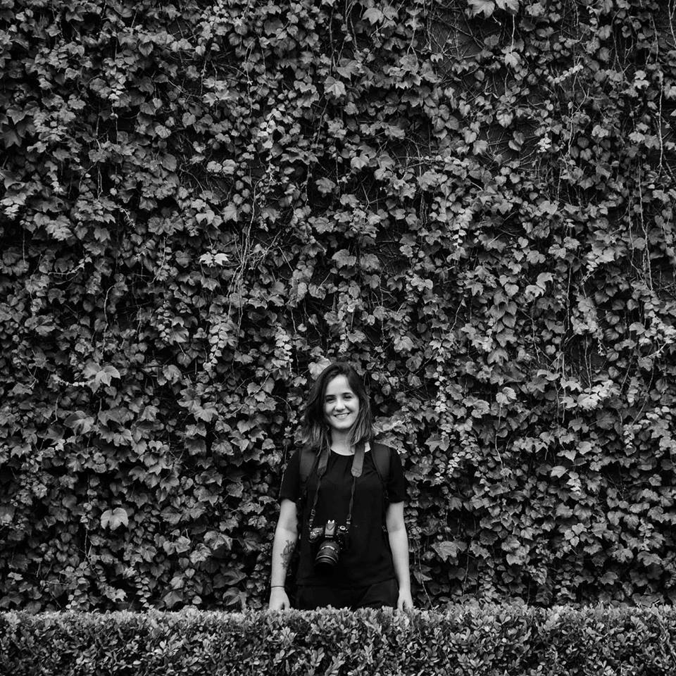

Sobre
Olá. A fotografia surge em minha vida como uma extensão da memória, aquele arquivo palpável. Nas fotografias da minha família, sempre tive aquela curiosidade em conhecer aquele tempo, lugares, amigos - e é essa essência da fotografia que me encanta. O retrato de alegria, amor... sentimentos. Decidi estudar fotografia no Instituto Internacional de Fotografia, que conclui no final de 2014. A ideia da "Amoré Fotografia" surge quando eu e a Vê, unimos a paixão em fotografar e decidimos compartilhar nosso trabalho. Coincidência da vida, o fato da Vê ser uma grande amiga, desde os tempos de infância. É uma alegria poder apresentar nosso trabalho.
